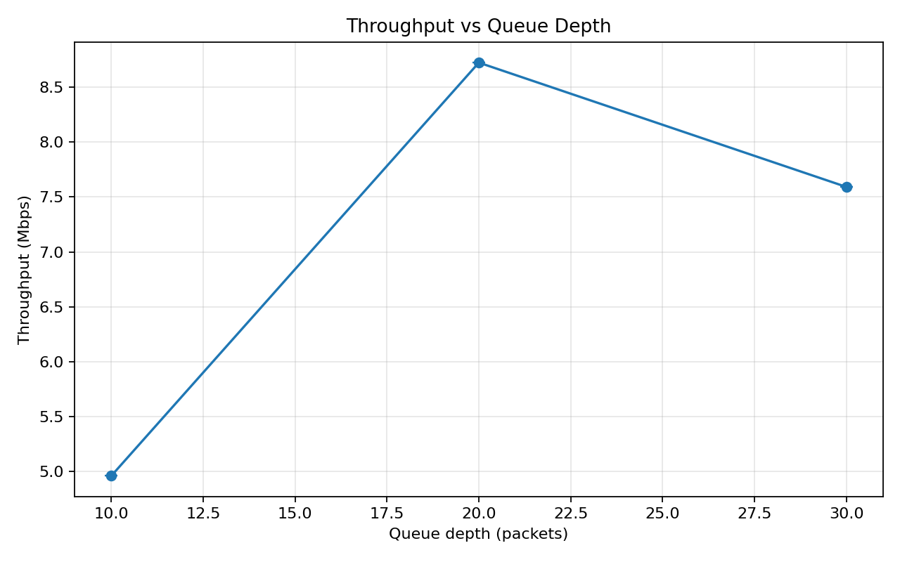
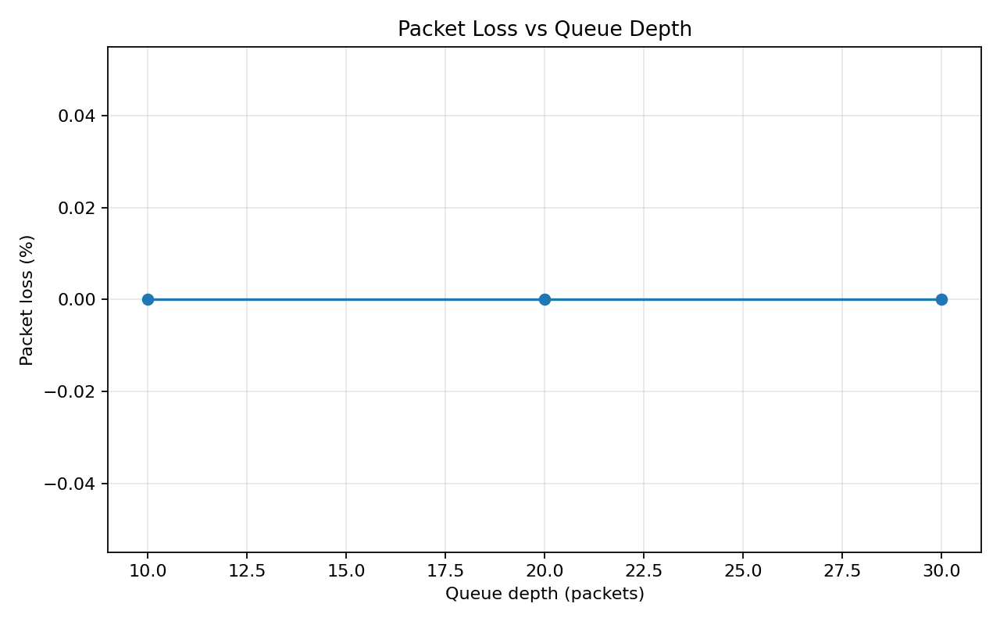

Request: Run TCP on dumbbell while varying queue depth from 10 to 30 packets in steps of 10, with 20 ms delay, 1 trial per queue depth for 2 seconds
{'protocol': 'TCP', 'topology': 'dumbbell', 'delay_ms': 20, 'queue_depth_start': 10, 'queue_depth_end': 30, 'queue_depth_step': 10, 'trials': 1, 'duration': 2, 'bandwidth_mbps': 10, 'udp_rate_mbps': 8}Intent parser: Gemini AI
Task completion: 100.0%Tool success: 100.0% (3/3)Mean trial time: 2.93sError recovery rate: 0.0%Agent iterations: 1
OpenRouter tokens — prompt: 149, completion: 109.
| Queue depth | Successful trials | Mean throughput (Mbps) | Std dev (Mbps) | Mean packet loss |
|---|---|---|---|---|
| 10 | 1 | 4.9591 | 0.0000 | 0.0000% |
| 20 | 1 | 8.7250 | 0.0000 | 0.0000% |
| 30 | 1 | 7.5921 | 0.0000 | 0.0000% |
Outliers flagged by the 1.5×IQR rule: 0. Failed tests: 0. Review recovery_trace.json and benchmark_results.csv for failed attempts and causes.


Runtime: 13.36s. Raw records: benchmark_results.csv. Recovery events: recovery_trace.json.